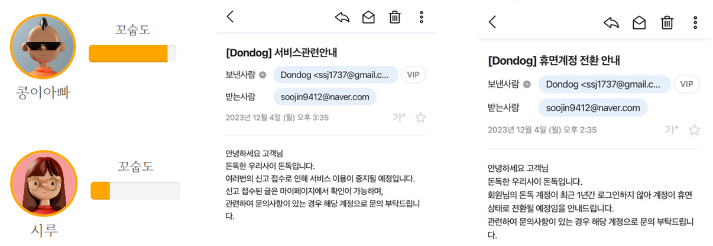

실시간 위치 서비스를 활용한 동네 반려견들과 견주들을 위한 연결 플랫폼입니다.
공공 데이터와 지도 api를 통해 산책 경로를 정하는 데 도움을 주며
실시간 위치 추적 서비스를 통한 주선 기능, 소셜 커뮤니티 기능,
관리자 기능을 Spring RestFulAPI로 구현했습니다.
LOGIN
SPRING SECURITY
사용자의 인증 권한을 처리하고 비밀번호를 안전한 방식으로 암호화시켜 저장
JWT를 사용하여 인증된 사용자의 세션을 관리하고 API 엔드포인트를 통해 로그인을 처리
SNS로그인
설정된 REDIRECT URL로 인가 코드를 전달 받아
카카오의 OAuth 토큰 방식을 사용하여 액세스 토큰을 얻어 로그인을 처리합니다
ADMIN
관리자 페이지의 주요 기능 중 하나인 메인대시보드입니다. Chart.js를 이용하여 막대 그래프, 선 그래프, 원형 차트의 다양한 그래픽 요소를 시각화하였습니다. 실제 데이터베이스와 연동되어 실제
데이터를 반영하여 실시간으로 기록이 반영됩니다.
Chart.js
막대 그래프, 선 그래프, 원형 차트의 다양한 그래픽 요소를 시각화
모니터링 분석
페이지 이용 통계와 같은 실시간 정보를 제공하기 위해 javascript와 setInterval 함수를 이용하여 데이터의 업데이트를 주기적으로 처리하도록 설계
이를 통해 관리자는 실시간으로 모니터링 분석이 가능합니다
비동기통신
페이지 전환 없이 회원 정보를 수정할 수 있도록 기능을 구현
관리자는 웹 페이지를 전환하지 않고도 손쉽게 회원 정보를 업데이트 가능

회원관리 자동화
Spring Scheduler 사용
원하는 조건값을 설정하여 해당 설정값에 도달한 회원에게 메일 전송
특정 조건값을 달성한 회원은 자동으로 등급 변동
ex)매너지수가 낮은 회원은 블랙 등급으로 변경하여 로그인 차단
troubleshooting
회원 관리 페이지에 접속할 때 응답 속도를 개선하기 위해서 해당 페이지에 대한 데이터만 출력할 수 있도록 페이징을 구현해 응답 속도를 개선하였습니다
1.부분 범위 페이지
데이터베이스에서 rownum을 이용하여 데이터를 효율적으로 추출하여 데이터베이스 쿼리의 성능 최적화
2.검색 조건 인덱스 생성
검색에 사용되는 필드에 한해서 인덱스를 생성하여 검색 속도를 향상
3.JSON 데이터 구조
클라이언트는 이러한 기능을 요청할 때 필요한 파라미터를 서버에 전달하고, 서버는 해당 요구 사항에 맞추어 데이터를 처리하여 JSON
형식으로 클라이언트에게 전송